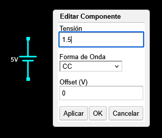
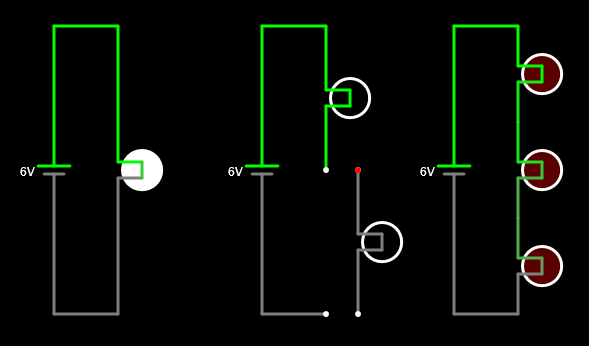

2. Connexió en sèrie¶
Dos components estan en sèrie si es connecten els uns als altres a la mateixa branca d’un circuit.
La connexió en sèrie té la propietat d’afegir la tensió dels generadors i distribuir la tensió entre els receptors. Quan s’elimina (o es fa malbé) un dels elements d’una connexió en sèrie, el corrent s’atura a circular i el circuit s’apaga.
Generadors de sèrie¶
Els generadors de sèries afegeixen les seves tensions per obtenir tensions més grans. La majoria de les bateries elèctriques tenen una tensió inferior a 4 volts, de manera que es reuneixen en sèrie per obtenir tensions més grans.
Per exemple, la bateria tradicional d’un cotxe de gasolina té 6 bateries de plom de 2 volts cadascuna, aconseguint així els 12 volts totals típics d’aquestes bateries.
Les bateries que formen la bateria d’un cotxe elèctric tenen 3,6 volts cadascuna i es col·loquen en sèrie per obtenir centenars de volts, necessaris per moure el motor elèctric.
Simula els circuits següents amb generadors de sèries al simulador en línia per veure com afecta la suma de tensions a la làmpada:

Com més bateries col·loquem en sèrie, més tensió té el circuit i la làmpada LAR s’encén.
Nota
Per assegurar -se que les bateries només tinguin 1,5 volts (la tensió típica d’una bateria alcalina), cal fer clic a doble a la bateria o fer clic amb el botó dret del ratolí de la bateria i trieu `` edit '':

Al quadre de diàleg Tensió canviarem el valor a 1.5 (amb un punt en lloc de coma) i acabarem fent clic al botó ** OK **.
Receptors de sèries¶
Els receptors de la sèrie distribueixen la tensió total del generador de manera que com més elements es col·loquin en sèrie, menys tensió tindrà cadascun.
Simula al simulador en línia els circuits següents amb làmpades de sèrie per veure com afecta la tensió de cada làmpada:

Quan el circuit només té ** una làmpada **, rep tota la tensió del generador i, per tant, mira al màxim.
Quan el circuit té ** dues làmpades ** en sèrie, cadascuna rep la meitat de la tensió del generador, de manera que s’il·luminen menys.
Finalment, quan el circuit té ** tres làmpades ** en sèrie, cadascuna rep un terç de la tensió del generador, de manera que gairebé no s’il·luminen.
Si ara ** Arrosseguem una de les làmpades ** en sèrie per treure -la del circuit, podem comprovar com tot el circuit deixa de funcionar. Perquè un circuit de sèrie funcioni, tots els seus elements han de permetre el pas del corrent:

Interruptors de sèries¶
Els interruptors serveixen per controlar el passatge actual pels receptors. Per això, els interruptors sempre estan connectats en sèrie amb els receptors que voleu controlar. Sent sèries, quan l’interruptor estigui obert, no passarà el receptor ni pel receptor i, quan es tanqui l’interruptor, també passarà el receptor.
Quan volem controlar una làmpada de dos punts diferents, la connexió és una mica diferent de la sèrie i s’ha d’utilitzar el circuit següent.
Simula els circuits següents amb commutadors al simulador en línia amb commutadors i amb un commutador de sèrie (ha de fer clic a ** s ** capital per dibuixar el commutador):

En prémer l’interruptor de la sèrie, la làmpada s’il·luminarà.
Al circuit dret s’il·luminarà la làmpada sempre que els dos interruptors es col·loquin en la mateixa direcció. Aquest és el circuit típic que s’utilitza per encendre la làmpada d’una sala des de dues posicions diferents.
Exercicis¶
Què és una connexió en sèrie i quines propietats teniu?
Dibuixa un circuit amb generadors de sèries. Què passa amb el circuit quan els generadors estan en sèrie?
Dibuixa un circuit amb receptors en sèrie. Què passa amb el circuit quan els receptors estan en sèrie?
Per què els interruptors sempre es connecten en sèrie amb els receptors que volem controlar?
Què passaria si connectéssim tres bateries de 6 volts en sèrie amb tres làmpades en sèrie? Quant creieu que s’encendrien?
Simula el circuit al Circuit Simulator per comprovar -ho.